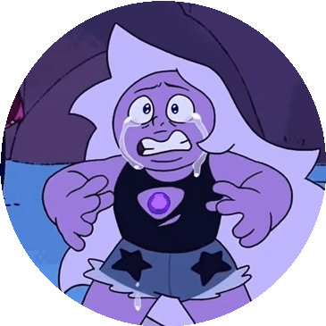

Segunda Situação
Com o ataque não tendo surtido efeito na imagem, ametista fica furiosa. Imaginando ser imperfeita de verdade, começa a duvidar de sua necessidade dentro das Crystal Gems, e se debulha em lágrimas. Desta vez quem ataca é a imagem. Então Ametista:

A-Tenta correr desesperada
B-Reune forças pra se defender
C-Desiste e aceita seu fim
Resposta